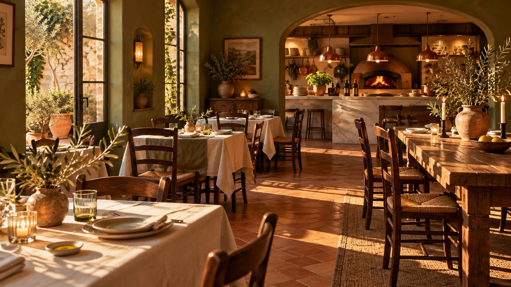

O sabor da conversa longa.
O restaurante pode apresentar o que torna cada visita especial: cozinha, ambiente, celebrações e acolhimento. Aqui, a narrativa é demonstrativa; em um projeto real ela nasceria da história da casa.
Duas atmosferas.
Uma vontade de voltar.
Selecione uma unidade fictícia para ver como localização e ambiente poderiam orientar uma reserva. Endereços e disponibilidade reais seriam cadastrados pela equipe.

Salão da Vila selecionado. Um site real mostraria endereço, horários, acessibilidade e disponibilidade desta unidade.
Simular reservaEncontros viram memória.
Além do jantar, a página pode explicar possibilidades para grupos e eventos. Capacidade, formato e atendimento precisam ser definidos com a operação.
- Jantares de grupo
- Comemorações
- Eventos sob consulta
Uma mesa menor, luz baixa e tempo para conversar.
Imagine sua próxima mesa.
Preencha os campos para visualizar uma intenção de reserva. Esta demo não envia dados nem confirma mesas.
Vamos criar uma experiência à altura da sua casa?
Conceito fictício criado para o portfólio ServAgency.
Conhecer a ServAgency